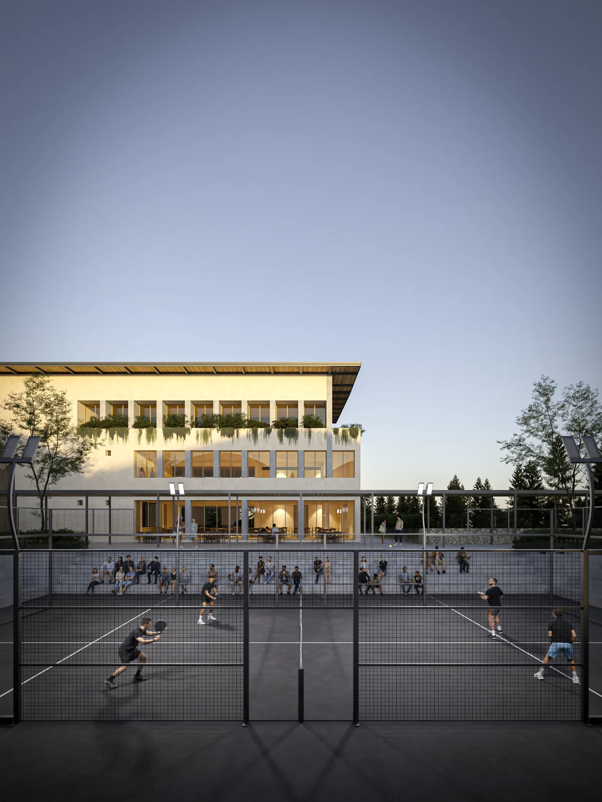
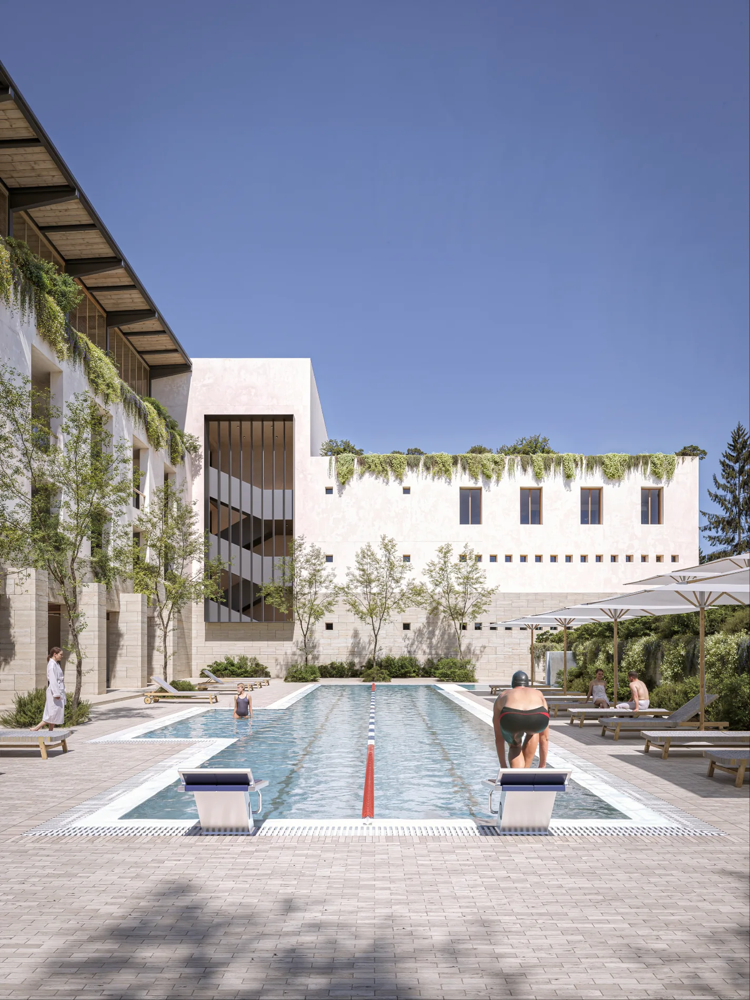
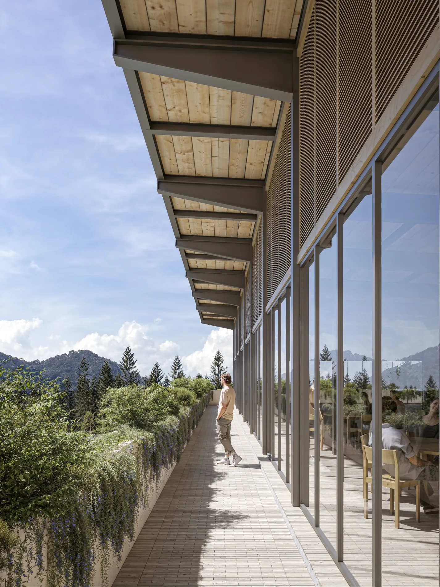
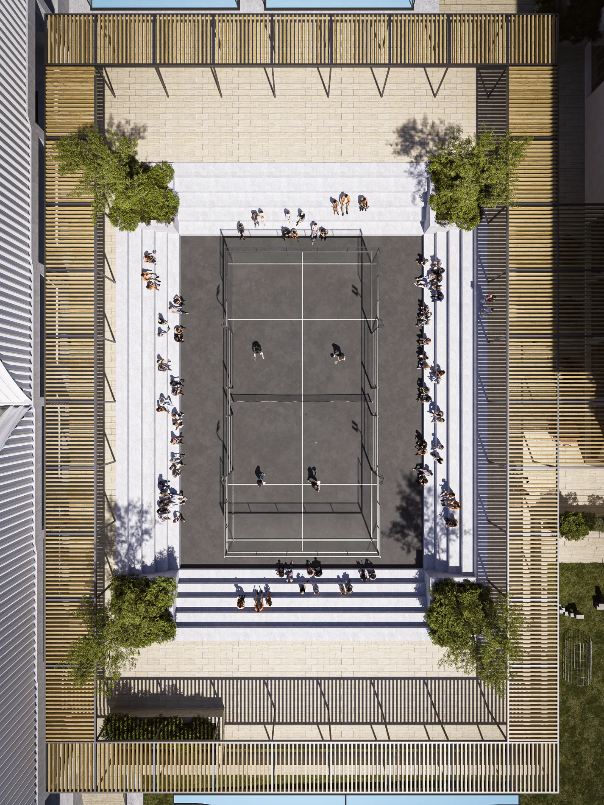
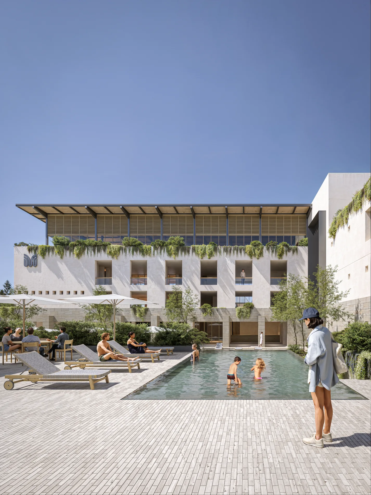

01 / DEPORTE
El juego se vive diferente.
Instalaciones diseñadas para hacer de cada encuentro una experiencia.
EL FUTURO DE TU ESTILO DE VIDA
Deporte, bienestar y comunidad.
Un entorno pensado para pertenecer.
MÁS QUE UN CLUB
Un punto de encuentro donde el deporte, el bienestar y la comunidad conviven en equilibrio. Una nueva forma de disfrutar cada momento.
UNA VISIÓN DIFERENTE
Arquitectura, naturaleza y experiencias que van mucho más allá del entrenamiento.
EXPERIENCIAS MIRADOR
Explora la dimensión del proyecto: desde la energía de la cancha hasta la calma de los espacios de encuentro.

Instalaciones diseñadas para hacer de cada encuentro una experiencia.

Espacios donde el movimiento también encuentra su pausa.

Arquitectura abierta a nuevas historias y momentos compartidos.

Un proyecto que continúa evolucionando.
DISFRÚTALO HOY · INSTALACIONES EN OPERACIÓN
Mirador Club ya cuenta con espacios para jugar, competir y disfrutar. Explora las disciplinas que actualmente están en funcionamiento.
DEPORTE · RAQUETA
Un espacio para compartir la energía de cada partido, desde el primer saque hasta el último punto.
Las imágenes arquitectónicas son ilustrativas. Las vistas gráficas de otras disciplinas son representaciones esquemáticas, no fotografías de las instalaciones.
BIENESTAR
La serenidad también es parte de la experiencia.
EL ARTE DE PERTENECER
Un club no se define solo por sus instalaciones, sino por las historias que suceden en ellas. Descubre el espacio que crecerá con tu estilo de vida.
Recorre el proyecto ↗
UNA VISIÓN EN EVOLUCIÓN
Conoce lo que ya puedes disfrutar y descubre las próximas etapas del desarrollo.
Las imágenes de las etapas futuras son visualizaciones arquitectónicas ilustrativas y no representan instalaciones actualmente disponibles.
MIRADOR CLUB
FORMA PARTE DE MIRADOR
Déjanos tus datos y prepara tu próxima experiencia en Mirador Club.